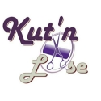

What is Kut'n Loose

Kut'n Loose (referred to from hereon in as the "Company") was established as a Sole Proprietorship at 704 Orindo Drive, Durham, North Carolina 27713 with the expectation of rapid expansion in the hair and beauty industry. The Company solicits financial backing in order to be able to introduce its new service.
The business is currently on 3 campuses providing salon services on 3 and barber services on 2. We are in the process of developing proposals to bring on potential senior communities for an additional mobile/ on- site salon service base.
Our Mission
Our mission is to provide stationary and mobile salon and barber services to a multi-ethnic community.
Kut'n Loose Salon and barber stationary and mobile services look to provide service to companies in the RTP, N.C. area. As a stationary business, we look to develop strategic partnerships with local barber's and stylist's as we develop a network of partners utilizing our services throughout the Triangle for marketing events and services.
We look to develop an network agency of stationary and mobile stylist to provide salon and barber services for the metropolitan city areas.